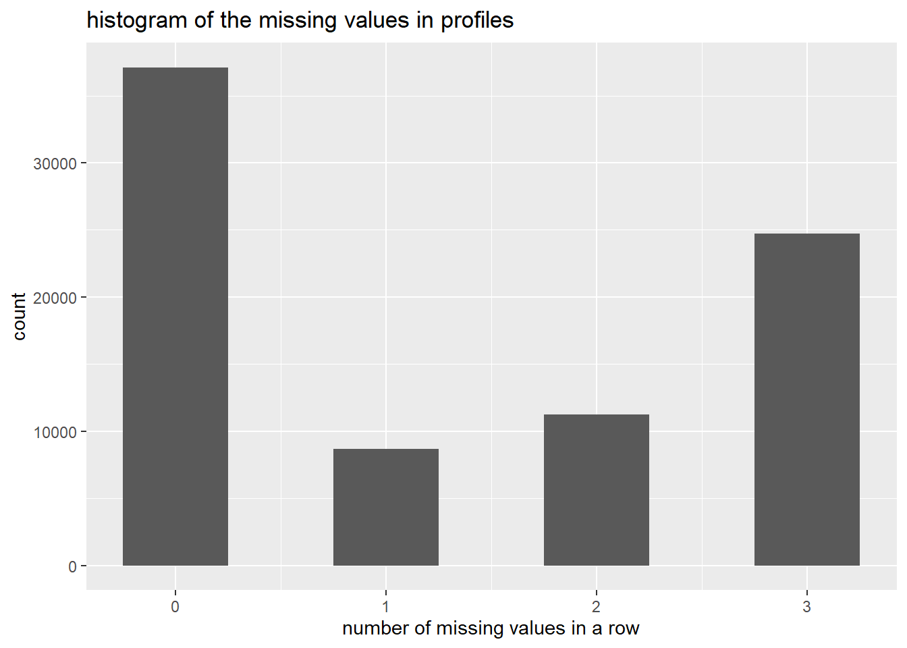
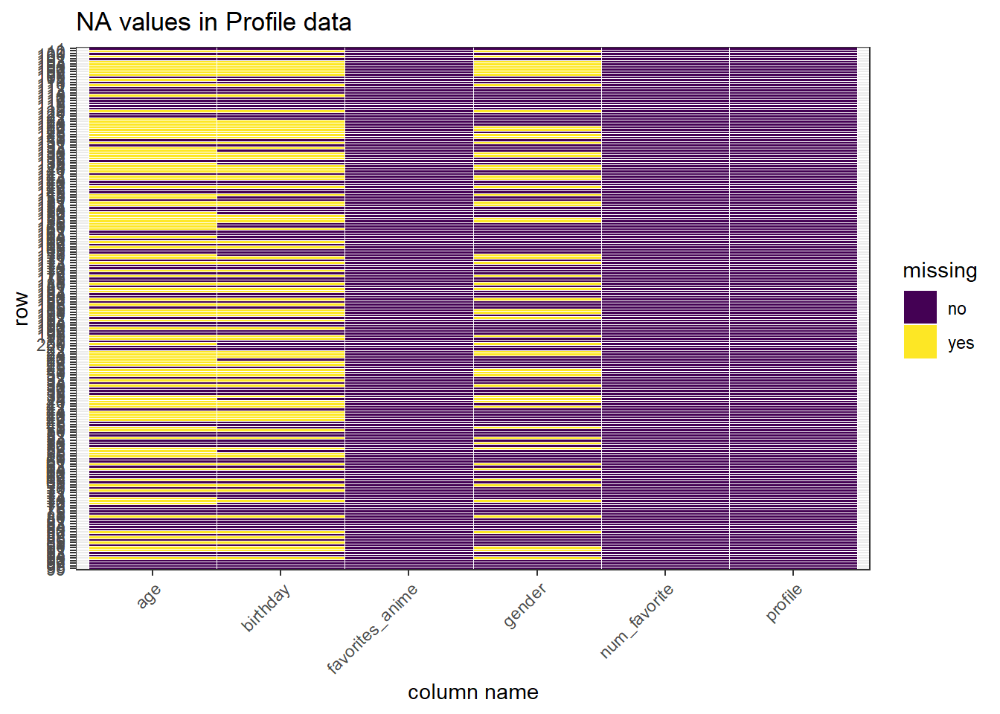
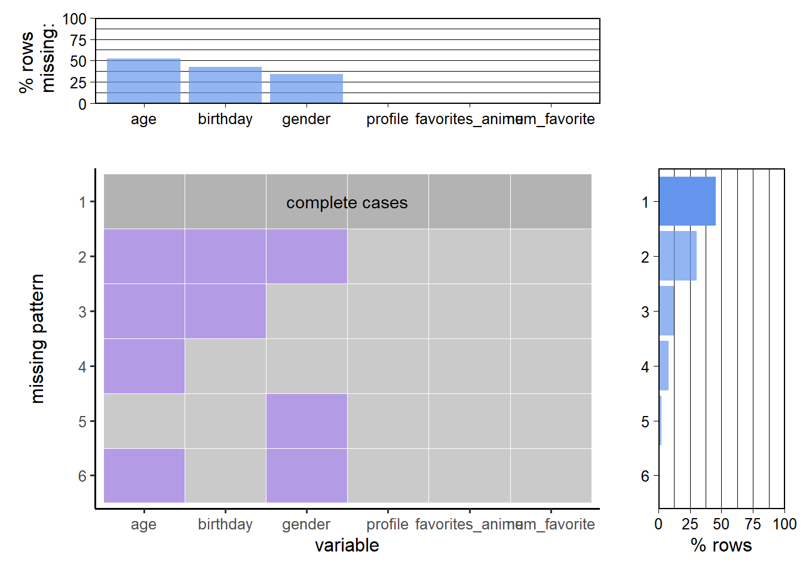
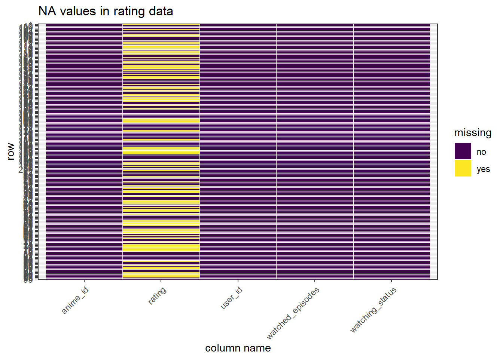

Chapter 4 Missing values
In this part, we deal with missing values from two datasets: Anime Rating and User Profile. Since the myAnimeList website maintains a well-structured database, most of its entries are complete, except for some unavoidable data entries. We will examine the two datasets and see if there are some patterns in it.
4.1 Data import and basic examination
## # A tibble: 6 x 5
## user_id anime_id rating watching_status watched_episodes
## <dbl> <dbl> <dbl> <dbl> <dbl>
## 1 0 67 9 1 1
## 2 0 6702 7 1 4
## 3 0 242 10 1 4
## 4 0 4898 NA 1 1
## 5 0 21 10 1 0
## 6 0 24 9 1 5## # A tibble: 6 x 6
## profile gender birthday favorites_anime num_favorite age
## <chr> <chr> <chr> <chr> <dbl> <dbl>
## 1 DesolatePsyche Male Oct 2, 1994 ['33352', '25013', '5530', '33674', '1482~ 165 28
## 2 baekbeans Female Nov 10, 2000 ['11061', '31964', '853', '20583', '918',~ 83 22
## 3 skrn <NA> <NA> ['918', '2904', '11741', '17074', '23273'~ 74 NA
## 4 edgewalker00 Male Sep 5 ['5680', '849', '2904', '3588', '37349'] 40 NA
## 5 aManOfCulture99 Male Oct 30, 1999 ['4181', '7791', '9617', '5680', '2167', ~ 80 23
## 6 eneri <NA> <NA> ['5114', '4898', '2904', '1575', '1482'] 40 NA4.2 Deal with missing values in the profile dataset

From the plot above, we could see that the largest proportion of rows are complete, but there are still a considerable amount of rows which have 1,2,3 missing values, and we will examine column distribution of missing values.
## col_na_profile
## age 42470
## birthday 34920
## gender 27871
## profile 0
## favorites_anime 0
## num_favorite 0From the table we could see that the age, birthday, and gender columns all have a lot of missing values, while the profile, favorite_anime and num_favorite columns are all filled with informative values.
Next, we examine the missing value distribution in a more broad perspective, as the dataset is too large and not feasible for this plot, we sampled only 200 rows randomly, which qualifies to display the general trend of the data. From the plot we could see that the three columns have large ratio of missing values, this makes sense since these three rows are all sensitive information of the users and some of them may not be willing to share this information, and all anime-related columns are filled completely, which meets our expectation.
 With the plot_missing function, we could see five different missing patterns (if any column is missing). The largest portion of data is complete, and the most common missing pattern is that all three columns that involve sensitive information (age, birthday and gender) are missing, then is age and birthday, other missing patterns are relatively uncommon.

4.3 Deal with missing values in the ratings dataset
Next, we examine the missing values in the rating dataset. From the table below, we could see that slightly more than half of the dataset is complete, but there are still considerable amount of rows that have at least one missing value. This makes sense in the website description, since some of the users may mark the watching status of a certain anime, but they may not rate it right away, which leads to a large portion of unrated anime in the rating database.
## row_na_rating Freq
## 1 0 12506062
## 2 1 9340576
## 3 2 94Next, we examine the missing pattern among columns. We could see that most of the missing values lie in the rating column, and very few lie in the watching_status column. The first point has been addressed in the previous paragraph, and the second point makes sense because users may very rarely mark the watching status as an invalid value that cannot be correctly encoded by the system, which leads to the 165 missing values in this column.
## col_na_rating
## rating 9340599
## watching_status 165
## user_id 0
## anime_id 0
## watched_episodes 0Similar to the last part, we have to sample the dataset to make the plot, and we could see that almost all missing values lie in the rating column.
